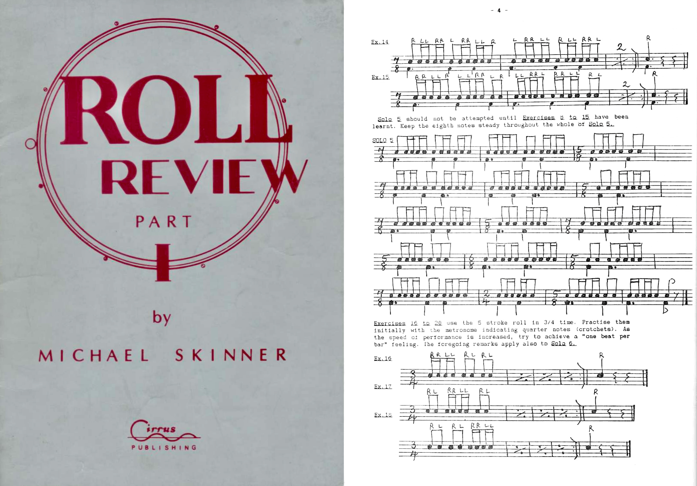

Tagged: 2022
For Once and for All: What Is a Ruff on the Drums?
Posted on July 3, 2022

One of the biggest things I seem to complain about is how drummers can’t seem to agree on what to call a lot of the stuff we play. Six Stroke Roll, Bonham Triplets, Metric Modulation… these terms could mean several different things depending on who’s using them and what the context is.
The worst casualty of this foible has to be the Ruff. Not many drummers in this day and age use the term ruff, let alone know what exactly it’s supposed to mean. Read More . . .
Groove: “Vietnow” — Brad Wilk with Rage Against the Machine
Posted on June 26, 2022
I know that the purpose of this blog isn’t to comment on world events, and I had something else ready to share today… but I guess I need to react somehow.
There’s actually nothing more to say really, so this is little more than lip service. I just don’t want to come across as too tuned out from the world. Read More . . .
Review: Great Hands for a Lifetime by Tommy Igoe
Posted on June 19, 2022

Sometimes I wonder if Tommy has ever read my “Jazz Crimes” post. There’s a very good chance he has — my article is one of the first things that shows up in Google if you punch in “tommy igoe jazz crimes”. Read More . . .
What’s the Deal With “Bonham Triplets”?
Posted on April 17, 2022

I’m a little bit late to the party on this one, but drummers are still as confused as ever regarding this topic, so here goes.
After getting into Led Zeppelin back in high school and learning about John Bonham, I became familiar with one of Bonham’s signature licks — “The Bonham Triplet”. Read More . . .
Review: Roll Review by Michael Skinner
Posted on April 10, 2022
(Review: Roll Review… try saying that five times fast!)
It seems like a lot of musicians have gotten hip to the resources afforded by these weird PDF libraries that have popped up across the internet (sites like Scribd, KUPDF, PDFCookie, and PDFCoffee). I don’t know why these sites exist, and I really don’t know why anyone would take the time to scan sheet music and upload it anonymously where it may or may not be seen. Nonetheless, there’s a lot of really interesting stuff out there. Read More . . .
Transcription: “The XIth Commandment” — James Bradley, Jr. with Chuck Mangione
Posted on April 3, 2022
Back in college, one of my roommates got a Chuck Mangione vinyl record as a gift from our other roommate (roommate A was the only one in the house with a turntable, while roommate B found the LP at Goodwill). The album is Tarantella, and when I looked at the credits on the sleeve, I saw that Steve Gadd is actually the drummer on the record. He gets a pretty cool showcase on a tune called “The XIth Commandment”. Read More . . .
Fire Safety for the Home Studio
Posted on March 27, 2022

A fire broke out at the Broncos stadium this past week, and just yesterday a wildfire sparked up and threatened to destroy part of Boulder. And as an unfortunate coincidence, I wanted to talk about fire safety today. So, instead of ruminating about how fires are now a year–round hazard in Colorado (on top of the seasonal hazards of floods, hail, lightning, and tornadoes), let’s talk about how to set up a home studio without burning your place down. Read More . . .
Transcription: “Cafo” — Animals as Leaders
Posted on March 20, 2022

I really have no business doing this… but there’s no denying that, even 13 years later, the first Animals as Leaders album still puts quite a spell on people, especially drummers. If you go to the music video for the album’s standout track, “Cafo”, you’ll see tons of people gushing over the drumming.
Well, here’s the thing: the drums are programmed. It’s actually pretty obvious. They don’t sound very good, the hats and ride cymbals are typically ignored in favor of crash/china cymbal barrages, and a lot of the licks don’t really make sense from a drummer’s perspective. Read More . . .
Transcription(s): The Nick Mason Fill Recipe
Posted on March 16, 2022

As I wrote last week, I’ve been listening to some Pink Floyd lately, as I often do at the start of the year. I regard Pink Floyd as one of the best bands out there, mainly because of their songwriting, vision, and ambition… but I’ve struggled to find a way to talk about them on the site. I don’t want to pick apart one of their tunes from a compositional perspective, since other (more knowledgable) people have already done that better than I could. And I don’t want to do a big transcription excerpt of the drumming on a Pink Floyd tune. Read More . . .
Know Your Tempos: Pink Floyd
Posted on March 6, 2022

I’ve been perusing Pink Floyd’s discography as part of a more ambitious post for next week when I realized that I could kill two birds with one stone and whip up a “Know Your Tempos” post. Here’s my boilerplate explanation:
If you ever see some sheet music that says “♩ = 215” and you don’t have a metronome on you, all you need to do is sing a song that you know was recorded at 215. Voilà. You’ll have a pretty good idea of how fast you’re supposed to play. It won’t be as accurate as using a click, but it’s a good trick to have… if you get a decent mental collection of these things, you’ll have a good reference for a variety of tempos. Or tempi. Whatever.
Unfortunately, this post didn’t go according to plan at all. Read More . . .
My Cymbal Bleed Saga
Posted on February 27, 2022

It’s been a tough week to stay focused. Hell, the news this morning alone was pretty exhausting. The carnage in Ukraine is bad enough, but this whole conflict has really broken the brains of a lot of people in the political circles I’m in.
Maybe someone can clear this up for me, but I just have a difficult time getting behind invading a country that didn’t attack you or your allies. And don’t get it twisted, I’m no big fan of America’s foreign policy, but let’s put our grown–up pants on and realize two things can be wrong at the same time.
There’s nothing like using the enduring frustrations of recording live drums to take your mind off of things. Read More . . .
Drums Don’t Play Actual Pitches. And Even if They Could, Why Would You Want Them To?
Posted on February 20, 2022

I’m starting to wonder if drummers are on a misguided quest to try and get their instrument to be taken more seriously. I think the metric modulation nonsense that I often complain about is part of this; other instruments get to talk about advanced harmony, so I get the appeal… but you just end up looking silly to non–drummers.
There’s another topic I want to look at in the same vein: tuning drums to notes. Like many problems in this day and age, the internet is partly to blame. Case in point: my inspiration to write this comes from a Reddit thread that was started this past week. As always, I chimed in on the thread and will expand upon my thoughts here. Read More . . .
Transcription: “Like Eating Glass” — Matt Tong with Bloc Party
Posted on February 13, 2022

If the Niners had made it to the Super Bowl, I may have taken the week off, although lately, I’ve been getting my sports fill from the Olympics anyway.
Today, I’ll add to my eclectic (and admittedly haphazard) collection of transcriptions. I have a WIP of a torch song from the 70s, but I couldn’t finish it in time for Valentine’s day weekend. This song at least has some romantic tinges to it. Read More . . .
Is There Any Difference Between the Triplet and the Sextuplet? And What About the 12–Let?
Posted on February 6, 2022

This is a pretty niche topic, but I wanted to share some thoughts I had on it, and I can imagine that some other musicians might actually be intrigued themselves if they were to consider this question, so just bear with me. Read More . . .
Review: Savage Rudimental Workshop by Matt Savage
Posted on January 30, 2022

Last week, I mused about how “one of these days” I would review Savage Rudimental Workshop… well, today’s the day. Read More . . .
How To Get Started On The Drums
Posted on January 23, 2022

Without a doubt, this is the number one question asked in internet drumming circles. Anyone who asks how to get started on the drums is guaranteed to get at least a few responses, so I’ve never bothered chiming in. I always figured that full–time teachers would be best at responding since they have to routinely get beginners up to speed. But I do have some thoughts to share, and despite my desire to see different topics brought up online, the burden is ultimately on me to come up with stuff to talk about. So let’s go through some pointers. Read More . . .
Transcription: “No Return” (Theme From Yellowjackets) — Craig Wedren and Anna Waronker
Posted on January 16, 2022

This is an unusual topic, but today we’re talking about the theme music for the recently premiered TV show Yellowjackets. I don’t know much about the show, except that it has something to do with a group of high school soccer prodigies who get involved in a plane crash, as well as their adult lives after the fact. Pretty interesting I guess; almost as interesting as the theme music! Read More . . .
Do Drummers Worry Too Much About Chops? Or Do They Not Worry Enough?
Posted on January 9, 2022

Who wouldn’t want to kick off the new year with a rant and a rave?
A few days after Christmas, a pretty innocuous thread was started on r/drums asking an age-old question: “you sit down on a drum set — what do you start playing?”. I left my go–to answer: “Squib Cakes” by Tower of Power, although some of Steve Gadd’s fills from the Chick Corea tune “Nite Sprite” would be another possibility. Read More . . .
Wrapping up 2021
Posted on January 2, 2022

I made one of these posts last year, so I figured that I would make another one for 2021. Maybe this will become an annual thing for me, but I suppose that’s dependent on how eventful my life is year to year. Read More . . .